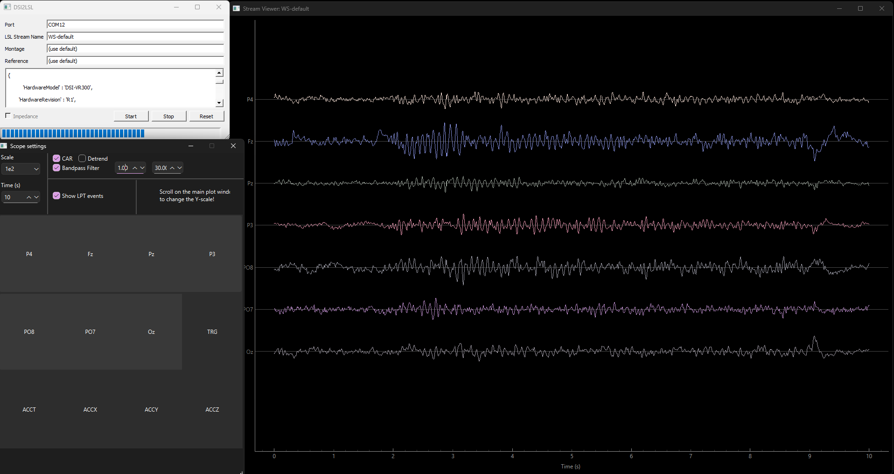

Stream Viewer#
Visualize real-time EEG data from Wearable Sensing devices using MNE-LSL’s StreamViewer.
Launch LSL Stream Viewer#
{kind=link}

StreamViewer displaying real-time EEG with eyes-closed alpha activity.#
Once your LSL stream is running (see LSL Setup), use the following code with the stream name to start StreamViewer and visualize the data in real-time:
from mne_lsl.stream_viewer import StreamViewer
stream_name = "WS-default" # Or DSI-24, DSI-VR300, WS-default
viewer = StreamViewer(stream_name=stream_name)
viewer.start()
Finding Your Stream Name
If unsure of your stream name, check the LSL GUI or use stream discovery to list available streams.
Customize the Viewer by Channel and Duration#
Channel selection and time window duration are adjusted interactively through the StreamViewer GUI after launch. There are no constructor parameters for these in v1.12.0.
View Filtered Streams from StreamLSL#
Note
In mne-lsl 1.12.0, StreamViewer connects directly to a raw LSL stream by name. It does not accept a pre-filtered StreamLSL object. For filtered visualization, apply filters via StreamLSL and retrieve data with get_data() to plot with your preferred plotting library.
To use StreamLSL for filtered data processing alongside the viewer, run them as separate scripts or processes — StreamViewer.start() is blocking and calls sys.exit() when the window closes, so code after it will not execute.
from mne_lsl.stream import StreamLSL
import time
stream_name = "WS-default" # Change to your stream name
stream = StreamLSL(bufsize=10, name=stream_name).connect()
stream.filter(l_freq=1.0, h_freq=40.0)
stream.notch_filter(freqs=60.0)
# Process filtered data here
while True:
data, ts = stream.get_data(winsize=1.0)
time.sleep(0.1)
from mne_lsl.stream_viewer import StreamViewer
stream_name = "WS-default" # Change to your stream name
viewer = StreamViewer(stream_name=stream_name)
viewer.start() # Blocking — exits the process when window closes
Next Steps#
Now that you can visualize your data in real-time:
Apply filtering - Clean signals and remove noise
Create epochs - Extract event-related segments
Build BCIs - Develop neurofeedback and classification systems
MNE-Python analysis - Offline analysis and advanced processing
Troubleshooting#
Window won’t open: See Installation and ensure dependencies are met.
Choppy display: Reduce window duration or number of channels.
No signal: Check stream is running and accessible.